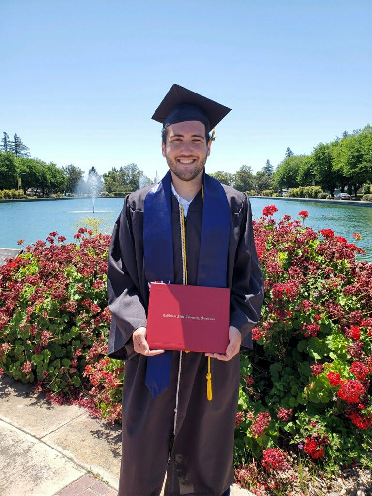

I'm a MSE student at UCSC studying Computer Science and Engineering, though most of my research and course credit has been in Computational Media. I'm currently building Saturn and working as a teaching assistant for Database Systems. I find large language models, and generative AI as a whole, to be incredibly interesting. It remains my primary area of focus and research, and I want to make education, creativity, and productivity stronger through the use of AI agents.
Saturn is my best and favorite project I have created. It is a zero-configuration service discovery system that uses mDNS and DNS-SD to automatically advertise and locate AI services on a network. Beyond the technology, this experience taught me the entire workflow behind creating a product. I created multiple use cases, a documentation site, and promoted it online. Outside of Saturn and generative AI, I enjoy creating 3D art as shown by my first donut render. I have done research in Infopolitcs while taking Network Security, and might have predicted the 2024 election results a month before they happened. I have also built game playing agents for Slay the Spire, and played around with game AI topics like MCTS, A*, and wave function collapse.
Feel free to look around this page at my projects and work experience. Below are highlighted projects and my current position, reach out to me if you'd like to talk. I last updated this page in December 2025.

Highlighted Project
Saturn
Saturn is a zero-configuration AI service discovery framework leveraging mDNS/DNS-SD to enable detection of AI services across local networks. The system abstracts away API key management by allowing a single household or organization to share access to cloud providers like OpenRouter or local models with Ollama. It implements priority-based routing, exposes OpenAI-compatible endpoints for broad client compatibility, and ships with reference implementations including a local proxy client, an Open WebUI pipe function, and not one, but two VLC media player exensions.
I grew up and lived in Turlock, CA until I graduated from the local college: CSU Stanislaus. I began studying computer science and coded for the first time at Modesto Junior College during COVID lockdowns. At this time, I took beginner CS courses and college electives that fulfilled graduation requirements: Shakespeare, Astronomy, and People and Culture of the Amazon, to name a few. I worked at Togo's Sandwiches at the time and struggled to find purpose in computer science.
Fortunately, I found a great support system at CSU Stanislaus. My family and friends always supported me through my journey and provided a great foundation for me. Jerry, Kevin, Luis, and all my coworkers made working for Learning Services such a great experience. I specifically look back fondly on filming graduation ceremonies and running around fixing tech in classrooms with them. Ayat Hatem is one of the best professors and mentors I have ever had, and she is one of the most influential figures in my academic journey. She mentored me through CSU Stan's ASPIRE Pathway and Google's Explore CSR program. She helped motivate me to stay in computer science, wrote my letter of recommendation to UCSC, and was probably the main reason I was admitted (along with my CV letter, thanks for the help, Dad). A lot of people in California like to hate on CSU Stanislaus, but the experiences and mentors I had there changed my life forever.
I bent the truth slightly in my last paragraph. Twice during my undergrad, I lived outside of Turlock. The first time was when I studied abroad in London for my internship, which can be found on the work experience tab. My program lasted two months, and living in a major metropolitan city changed my life. All the friends I made and experiences I had (both lists are too long to include) offered me such powerful introspection. This trip made me more confident and focused on my career goals. The second time was my final semester of undergrad, when I slept on my brother's couch in Monterey, California while driving back to Turlock for classes. I used this time to reflect on who I wanted to become. I studied 3D art creation with Blender and video editing with Capcut. I also ground out a lot of Leetcode at the time, much like my fellow computer science graduates. To pay the bills, I worked at the best kayak tour shop in America: Kayak Connection in Elkhorn Slough. They have the highest population of northern sea otters and offer incredible wildlife tours, tell them I sent you. I bring up these two experiences because both of them gave me time to realize that I was unsatisfied with what I had accomplished in academia. Fortunately, I was blessed when I saw that my application got accepted to the University of California, Santa Cruz.
UCSC is so many different things to me that it is hard to explain the impact it has had on my life. From completely altering the trajectory of my career to strengthening my basketball dominance in recreational classes, UCSC has changed my life. I began my first quarter taking Network Security with Ram Raman, which blew me away. I learned so much about modern research in DNS, technology like ZMap, and censorship resistance. I thought I would continue down the security road until I took Interactive Storytelling with Michael Mateas, the creator of Façade! This class pushed me into the realm of game AI and generated content, which is when Mateas recommended I take "Teaching with Generative AI" with Adam Smith, who ended up becoming my research advisor and the most influential figure in my academic journey. I am writing this as I am building Saturn with him, and already my way of thinking, solving problems, and asking questions has become so much stronger. I am a better engineer now, and I have the confidence and experience to build great technology.
I left out so much more that I could include in this biography, but I wanted to keep it short. I am always learning and growing, but I am someone who finishes their goals and constantly sets the bar higher. I want to be an inspiration to computer scientists who feel stuck and lost. I want to push myself to limits I don't know exist yet. But still, I am new. I am looking for my next big experience after grad school, and I hope to find a company or startup that aligns with my goals of creating AI tools to boost productivity and quality of life for people. If you would like to talk to me to learn more, I respond to emails and Twitter messages the fastest, but you can find all my socials below. Thank you for taking the time to read, and if you made it this far shoot me a message!